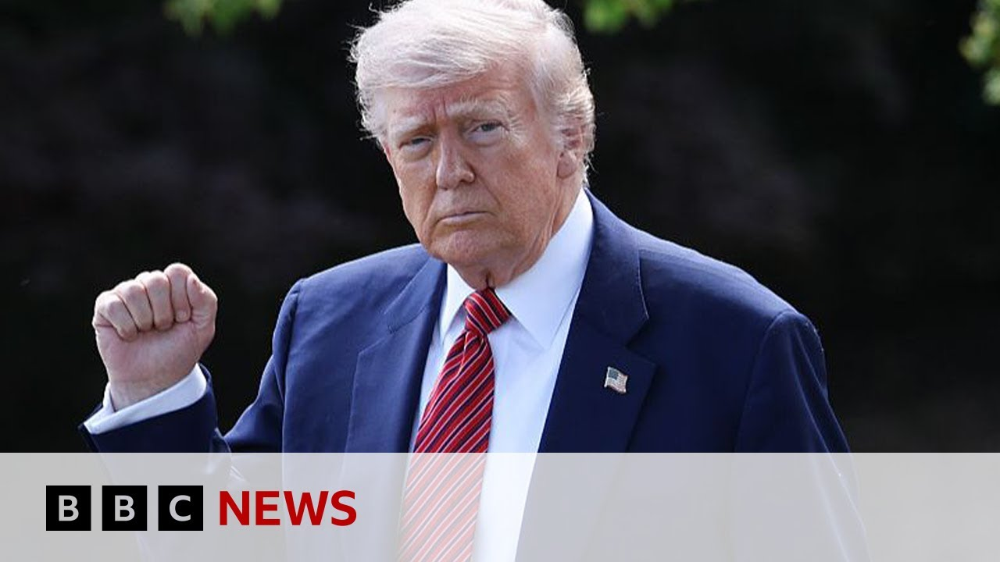

【美国上诉法院恢复特朗普关税计划 | BBC新闻】
Summary: After less than a 24-hour pause, the Trump administration's sweeping tariff plan is back on, at least for now.
摘要： 在不到24小时的暂停后，特朗普政府的全面关税计划重新生效，至少目前如此。

⏱️ Estimated Reading Time: 8 min
After less than a 24-hour pause, the Trump administration's sweeping tariff plan is back on, at least for now.
在不到24小时的暂停后，特朗普政府的全面关税计划重新生效，至少目前如此。
The US Court of Appeals is temporarily halting a US trade court's decision on Wednesday evening that would have blocked most of Mr. Trump's tariffs as the administration appeals against it.
美国上诉法院暂时中止了美国贸易法院周三晚间的裁决，该裁决本将阻止特朗普的大部分关税，而政府正在对此提出上诉。
Well, the Court of International Trade found that Mr. Trump overstepped his authority when in April he used an emergency law to impose tariffs on nearly every country.
国际贸易法院裁定，特朗普在4月份使用紧急法律对几乎所有国家征收关税时越权。
Today, the White House sharply criticized the trade court, calling its ruling a judicial overreach.
今天，白宫严厉批评贸易法院，称其裁决是司法越权。
The Trump administration says that it's preparing to appeal the ruling all the way up to the Supreme Court.
特朗普政府表示准备将裁决上诉至最高法院。
Here's our North America editor, Sarah Smith.
这是我们的北美编辑莎拉·史密斯。
The opening bell marked a small celebration for US stock markets this morning.
开盘钟声标志着今早美国股市的小幅庆祝。
With prices rising on the news that Donald Trump's trade tariffs may be illegal and might have to be struck down, the markets hate the idea of a global trade war.
由于有消息称特朗普的贸易关税可能非法并可能被撤销，价格上涨，市场厌恶全球贸易战的想法。
My fellow Americans, this is Liberation Day.
我的美国同胞们，这是解放日。
The president has delighted in imposing trade tariffs on almost every country in the world, claiming that he could use extraordinary emergency powers to do this without passing legislation because he said America was facing a national economic crisis.
总统乐于对世界上几乎每个国家征收贸易关税，声称他可以使用紧急权力在不通过立法的情况下这样做，因为他说美国正面临国家经济危机。
They're ripping us off and they understood it.
他们在剥削我们，他们也明白这一点。
But a court has ruled he does not have the authority to do this on his own, prompting outrage from the White House.
但法院裁定他无权独自这样做，引发白宫的愤怒。
The courts should have no role here.
法院不应在此事中发挥作用。
There is a troubling and dangerous trend of unelected judges inserting themselves into the presidential decision-making process.
存在一种令人不安且危险的趋势，即未经选举的法官介入总统决策过程。
America cannot function if President Trump or any other president for that matter has their sensitive diplomatic or trade negotiations railroaded by activist judges.
如果特朗普总统或任何其他总统的敏感外交或贸易谈判被激进法官左右，美国就无法运转。
Donald Trump has raised tariffs on some countries sky high and then promptly dropped them again, leading some people to say he chickens out.
特朗普对一些国家的关税大幅提高后又迅速降低，导致一些人说他退缩了。
Mr. President, Wall Street analysts have coined a new term called the taco trade.
总统先生，华尔街分析师创造了一个新术语“塔可贸易”。
They're saying Trump always chickens out on your tariff threats and that's why markets are higher this week.
他们说特朗普总是在关税威胁上退缩，这就是本周市场上涨的原因。
What's your response to that?
您对此有何回应？
I kick out.
我踢出去。
Chicken out.
退缩。
Oh, isn't that chicken out?
哦，那不是退缩吗？
I've never heard that.
我从未听说过。
You mean because I reduced China from 145% that I set down to 100 and then down to another number?
你是说因为我将中国的关税从145%降到100，然后又降到另一个数字？
Those numbers, the tariff rates charged on goods imported into America keep going up and down according, it seems, to Donald Trump's moods.
这些数字，即对进口到美国的商品征收的关税税率，似乎根据特朗普的情绪不断上下波动。
If he doesn't have the authority to impose high import taxes, will that stop other countries from negotiating new trade deals?
如果他没有权力征收高额进口税，这会阻止其他国家谈判新的贸易协议吗？
The court cases were brought by 12 US states and five businesses that argued the Trump tariffs were hurting American companies and consumers.
这些诉讼由12个美国州和五家企业提起，他们认为特朗普的关税正在伤害美国企业和消费者。
Tariffs are something that are not just out there in the ether, right?
关税不仅仅是虚无缥缈的东西，对吧？
They are something that we all pay.
它们是我们所有人都要支付的。
They get passed down to us as consumers.
它们作为消费者转嫁给我们。
They get passed down to business, small businesses, which impact us.
它们转嫁给企业，尤其是小企业，进而影响我们。
25% import taxes that America has imposed on cars, steel, and aluminium can remain unaffected by the court ruling.
美国对汽车、钢铁和铝征收的25%进口税可能不受法院裁决的影响。
Cars made in Britain, though, will only be charged 10% because the UK is the first and only country so far to have signed a new trade deal with America.
不过，英国制造的汽车仅征收10%的关税，因为英国是迄今为止第一个也是唯一一个与美国签署新贸易协议的国家。
A deal that looks less favorable if Donald Trump never had the authority to threaten higher tariff rates or force a trade negotiation in the first place.
如果特朗普一开始就没有权力威胁提高关税或迫使贸易谈判，这项协议看起来就不那么有利。
News that an appeals court has reinstated the president's tariff plan for now is being treated as a victory by the administration.
上诉法院暂时恢复总统关税计划的消息被政府视为胜利。
President Trump's case is ironclad and the appeals court took almost no time at In fact, we're surprised it took till the end of the day for them to overturn this previous ruling.
特朗普总统的案子无懈可击，上诉法院几乎没有花时间。事实上，我们很惊讶他们直到当天晚些时候才推翻之前的裁决。
The closing bell on Wall Street saw a market extremely uncertain about what will happen next with the Trump tariffs.
华尔街收盘时，市场对特朗普关税的下一步发展极为不确定。
Who will ultimately win in court?
谁最终会在法庭上获胜？
And uncertainty is never good for business.
而不确定性对商业从来都不是好事。
Well, Ambassador Michael Froman is the president of the Council on Foreign Relations and previously served in President Obama's administration as the US Trade Representative, and he gave us his take on the past 24 hours.
迈克尔·弗罗曼大使是外交关系委员会主席，此前曾在奥巴马政府担任美国贸易代表，他向我们谈了过去24小时的看法。
Well, for right now, uh, tariffs will continue to be paid.
嗯，目前关税将继续支付。
And by the way, the the court ruling was about the tariffs that the president announced, um, using the emergency powers.
顺便说一下，法院的裁决是关于总统使用紧急权力宣布的关税。
There are other tariffs in place on steel, aluminum and autos that the court did not touch.
还有其他针对钢铁、铝和汽车的关税，法院并未触及。
So those are certainly in place uh regardless of the appeal and the others are in place pending uh the appeal.
所以这些肯定仍然有效，无论上诉如何，而其他关税在上诉期间仍然有效。
Uh you know the the the under the constitution, the US constitution, the congress has the right to set tariff rates and then over the years has delegated that authority to the president and to the executive under certain conditions.
嗯，你知道，根据美国宪法，国会有权设定关税税率，多年来在某些条件下已将这一权力下放给总统和行政部门。
if there's been unfair trade practices, if there's a national security issue.
如果存在不公平贸易行为，如果存在国家安全问题。
Um, and in this case, the president used a different kind of authority, an emergency economic authority, which allows him to shortcut some of the procedures of those other delegations.
嗯，在这种情况下，总统使用了另一种权力，即紧急经济权力，这使他可以绕过其他授权的一些程序。
So, he can still impose tariffs going forward using other authorities.
因此，他仍然可以使用其他权力征收关税。
It just would take him more time and more process to do.
只是需要更多时间和更多程序。